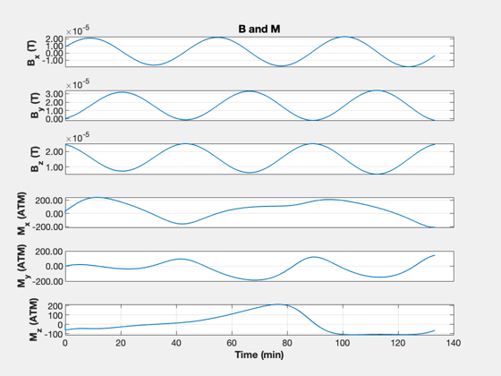

Space Station Attitude Control
Attitude control with thrusters an reaction wheels with magnetic momentum unloading.
The simulation uses properties generated by ManufacturingSpaceStationCAD.
This file loads SpaceStationProps.mat. It creates output in the file SpaceStationData.txt ------------------------------------------------------------------------ See also RHSSpaceStation, SpaceStationControl, SpaceStationDragDisturbance, PlotOrbit, El2RV, BDipole, Figui, TimeHistory, Date2JD, RK4 ------------------------------------------------------------------------
Contents
%-------------------------------------------------------------------------- % Copyright (c) 2025 Princeton Satellite Systems, Inc. % All rights reserved. %--------------------------------------------------------------------------
Controls
aCSOn = true; % apply the ACS useThruster = false; % use thrusters for ACS (otherwise, wheels) mUOn = true; % momentum unloading
Initialization
jD0 = Date2JD([2029 6 1]); % Earth's radius rE = 6378.165; % Simulation timing tEnd = 8000.0; % sec dT = 1.0; % sec % Spacecraft altitude h = 350.0; % km % Orbit el = [rE+h 28.573469*pi/180 pi 0 0 0]; [r,v] = El2RV(el); % CAD Model data - without the attached orbiter dCAD = load('SpaceStationProps.mat');
Initialize the dynamics
d = RHSSpaceStation; d.inr = dCAD.mass.inertia; d.invInr = inv(d.inr); d.uThruster = -dCAD.uThruster; % reverse plume direction d.rThruster = dCAD.rThruster; d.cM = dCAD.mass.cM; d.mass = dCAD.mass.mass; % Wheel inertia based on Honeywell HR 16 % RWA is Reaction Wheel Assembly omegaSpec = 6000*pi/30; d.inrRWA = (75/omegaSpec)*[1;1;1;1]; % Reaction wheel pyramid about pitch c = cos(pi/4); d.uRWA = [c -c 0 0;... c c c c;... 0 0 c -c]; % Drag disturbances d.dist = dCAD.dSurf; d.dist.jD0 = jD0; d.dist.cM = dCAD.mass.cM; d.dist.cD = 2.7;
Initialize the controller
dACS = SpaceStationControl('data structure'); dACS.inr = dCAD.mass.inertia; % kg-m^2 dACS.dT = dT; dACS.dTMU = 20*dT; % Momentum unloading time step dACS.uRWA = d.uRWA; dACS.inrRWA = d.inrRWA; dACS.aCSOn = aCSOn; dACS.useThruster = useThruster; dACS.mUOn = mUOn; dACS.uThruster = -dCAD.uThruster; % reverse plume direction dACS.rThruster = dCAD.rThruster; dACS.cM = dCAD.mass.cM; dACS = SpaceStationControl('initialize',dACS);
Simulation
% State vector: [position;velocity;quaternion;body rate;rwa rate] qS = QUnit(QLVLH(r,v)+[0;0.01;0;0]); x = [r;v;qS;0;0;0;10;10;10;10]; n = ceil(tEnd/dT); xP = zeros(37,n); t = (0:n-1)*dT; % This creates a data file for use in other applications fileID = fopen('SpaceStationData.txt','wt'); TimeDisplay( 'initialize', 'Space Station ACS Simulation', n ); for k = 1:n % Environment b = BDipole(x(1:3),jD0+t(k)/86400); % ECI frame dACS.b = b; % if measured, would have noise d.b = b; % truth % Control system dACS = SpaceStationControl('update',dACS,x,t(k)); d.torqueRWA = dACS.torqueRWA; d.mDipole = dACS.m; d.fThruster = dACS.fThruster; % Adjust the quaternion so the one term is always positive for plotting q = x(7:10); if( q(1) < 0 ) q = -q; end % Get data for plotting [~,hECI,torqueD] = RHSSpaceStation(x,t(k),d); xP(:,k) = [x(1:6);q;x(11:end);d.torqueRWA;... dACS.dC.q_desired_state;b;dACS.m;hECI;torqueD]; % Integrate the right hand side x = RK4(@RHSSpaceStation,x,dT,t(k),d); fprintf(fileID,'%8.1f %12.2e %12.2e %12.2e %12.2e %12.2e %12.2e %12.2e\n',t(k),q,r); TimeDisplay( 'update' ); end TimeDisplay( 'close' ); % Close the data file fclose(fileID);
Plotting
PlotOrbit( xP(1:3,:), t, jD0 );
yL = {'r_x' 'r_y' 'r_z' ...
'v_x' 'v_y' 'v_z' ...
'q_s', 'q_x', 'q_y', 'q_z'...
'\omega_x (rad/s)', '\omega_y (rad/s)', '\omega_z (rad/s)',...
'\omega_1 (rad/s)', '\omega_2 (rad/s)', '\omega_3 (rad/s)', '\omega_4 (rad/s)',...
'T_1 (Nm)', 'T_2 (Nm)', 'T_3 (Nm)', 'T_4 (Nm)' ...
'q_{s_T}', 'q_{x_T}', 'q_{y_T}', 'q_{z_T}' ...
'B_x (T) ' 'B_y (T)' 'B_z (T)' ...
'M_x (ATM) ' 'M_y (ATM)' 'M_z (ATM)' ...
'H_x (Nms) ' 'H_y (Nms)' 'H_z (Nms)' ...
'T_{d_x} (Nm)' 'T_{d_y} (Nm)' 'T_{d_z} (Nm)' };
k = [7:10 22:25];
kY = 7:10;
TimeHistory(t,xP(k,:),yL(kY),'Attitude',{[1 5] [2 6] [3 7] [4 8]});
k = 11:13;
TimeHistory(t,xP(k,:),yL(k),'Angular Rates');
k = 14:17;
TimeHistory(t,xP(k,:),yL(k),'RWA Speeds');
k = 18:21;
TimeHistory(t,xP(k,:),yL(k),'RWA Torque');
k = 22:25;
TimeHistory(t,xP(k,:),yL(k),'Target Attitude');
k = 26:31;
TimeHistory(t,xP(k,:),yL(k),'B and M');
k = 32:37;
TimeHistory(t,xP(k,:),yL(k),'H and Disturbance');
Figui;
%--------------------------------------
% $Id: 07b731a836435a81f0e3bdf37033a0605f98dc04 $
